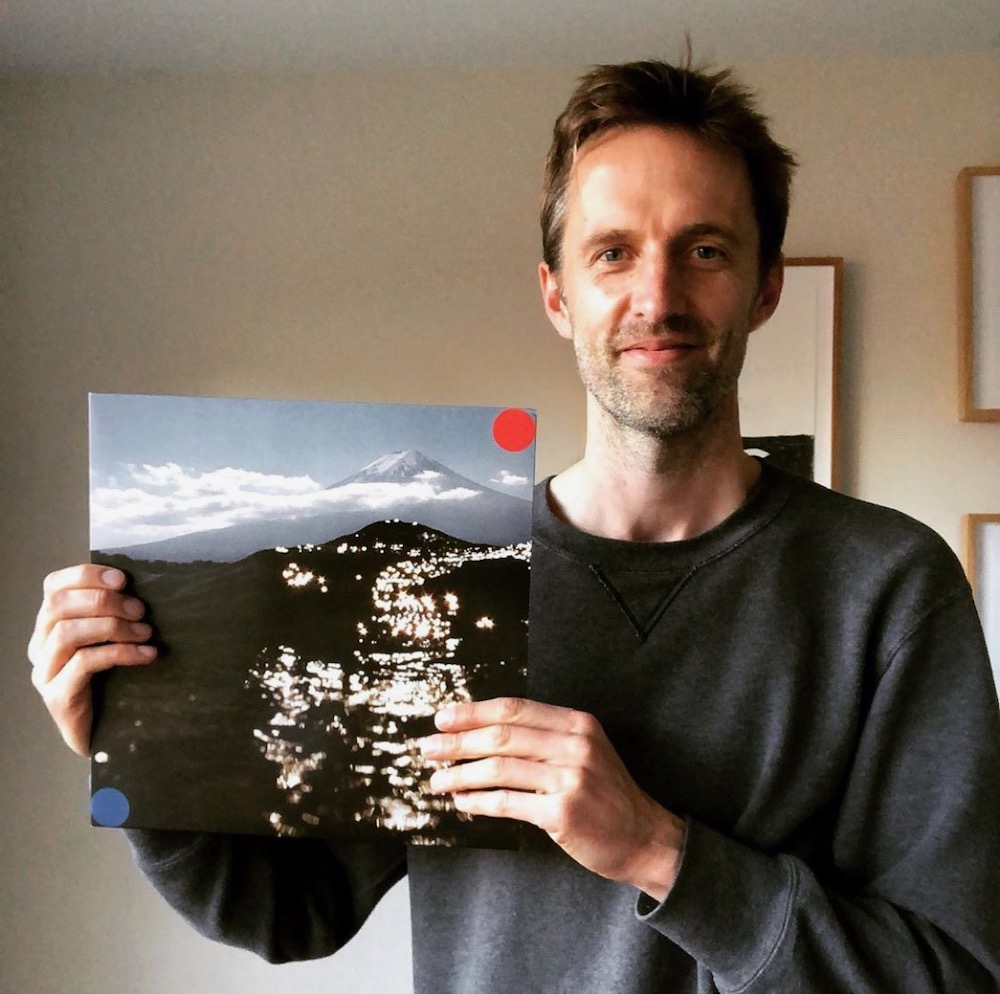
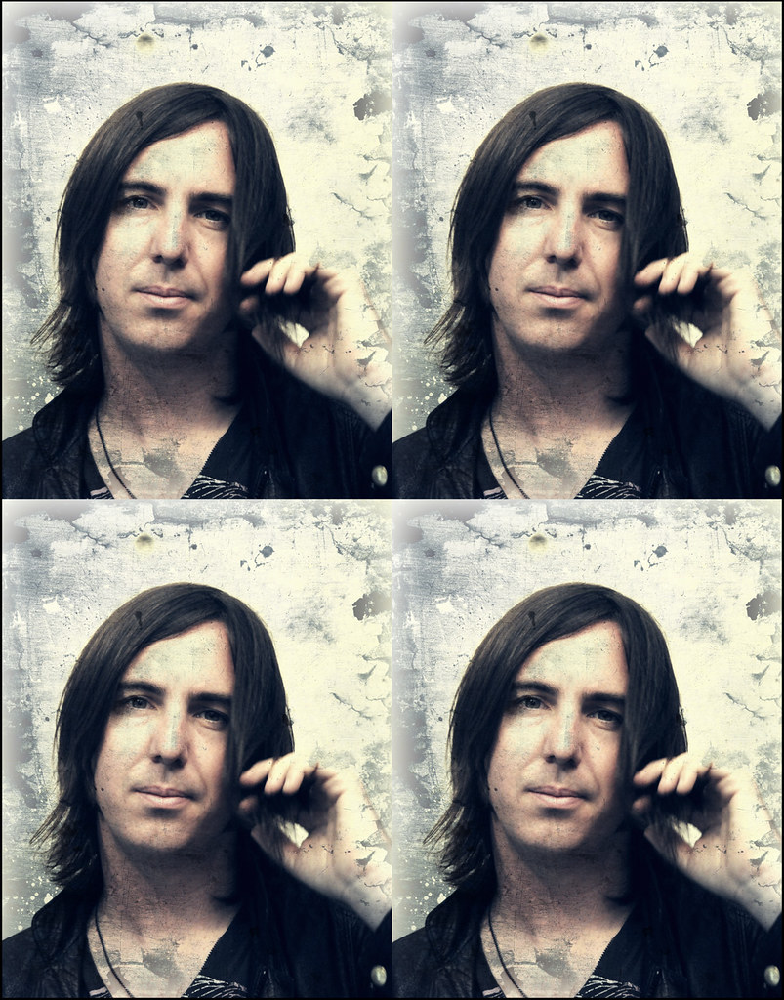
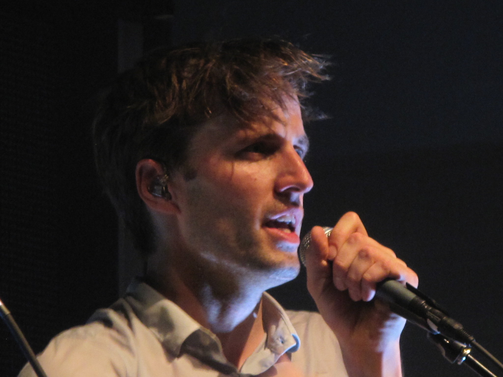

Dan Whitford
Dan Whitford is an Australian musician, singer, and songwriter best known as the frontman and founding member of the electronic music band Cut/Copy. He was born on January 1, 1974, in Melbourne, Australia.
Whitford's passion for music developed at an early age, and he began experimenting with various instruments and electronic music production during his teenage years. In 2001, he formed Cut/Copy, initially as a solo project but later expanding into a full band.
As the lead vocalist and primary songwriter of Cut/Copy, Whitford played a significant role in shaping the band's distinctive sound, which blends elements of indie rock, synth-pop, and dance music. His melodic vocals, coupled with infectious hooks and catchy melodies, helped establish Cut/Copy as one of Australia's leading electronic acts.
|
 |
|
Tim Hoey
Tim Hoey is an accomplished musician and guitarist hailing from Melbourne, Australia. He is best known as a member of the renowned Australian electronic band Cut/Copy. Born and raised in Melbourne, Tim developed a passion for music at a young age and began playing the guitar as a teenager.
In the early 2000s, Tim Hoey co-founded Cut/Copy along with Dan Whitford and Mitchell Scott. The band quickly gained recognition for their unique blend of indie rock and electronic music, creating infectious and energetic tracks that captivated audiences worldwide. With Tim's skillful guitar playing and innovative use of effects, Cut/Copy developed a distinctive sound that set them apart in the music scene.
|
Mitchell Scott
Mitchell Scott is a highly accomplished musician and drummer, widely known as a member of the Australian electronic band Cut/Copy. Hailing from Melbourne, Australia, Mitchell has played a significant role in shaping the band's distinctive sound and contributing to their success.
Born with a passion for rhythm and percussion, Mitchell Scott embarked on his musical journey at a young age. His exceptional drumming skills and innate sense of timing quickly caught the attention of fellow band members Dan Whitford and Tim Hoey, leading to the formation of Cut/Copy in the early 2000s.
As the driving force behind Cut/Copy's infectious beats and grooves, Mitchell's drumming style blends elements of electronic music with indie rock, creating a captivating fusion that resonates with audiences worldwide. His dynamic and precise drum patterns provide a solid foundation for the band's sound, infusing their tracks with energy and propulsive rhythms.
|
 |
|  |
Ben Browning
Ben Browning is a talented musician and bassist, widely recognized as a member of the Australian electronic band Cut/Copy. Originally from Melbourne, Australia, Ben has made significant contributions to the band's unique sound and has become an integral part of their musical journey.
Born with a natural affinity for music, Ben Browning developed a passion for bass guitar early on. His melodic basslines and infectious grooves have played a crucial role in defining Cut/Copy's distinctive sound, adding depth and rhythm to their compositions.
Ben joined Cut/Copy in the mid-2000s, becoming an essential component of the band's lineup alongside Dan Whitford, Tim Hoey, and Mitchell Scott. His bass-playing style incorporates elements of disco, funk, and electronic music, seamlessly blending genres and infusing the band's tracks with a catchy and danceable quality.
|